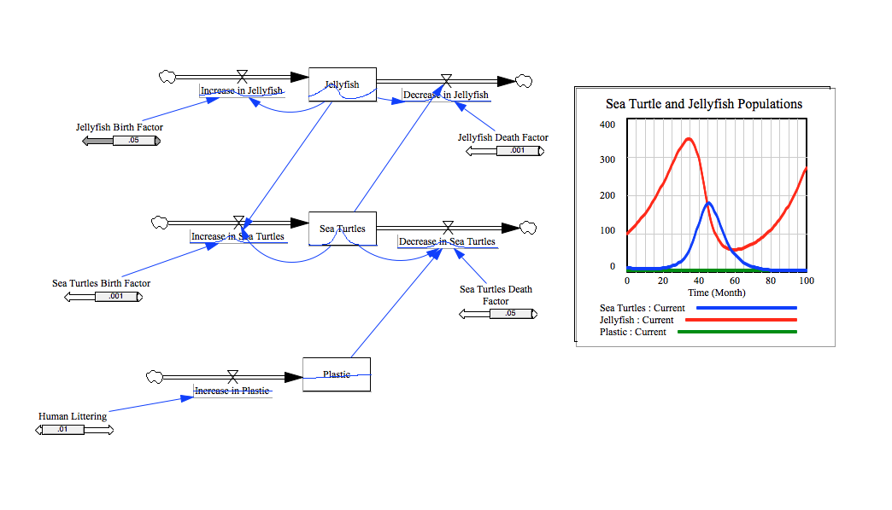

Link to Model
How to Open and Run
To open this system model, you need to have Vensim downloaded on your computer. You can download Vensim, by going to: http://vensim.com/free-download/. To open this vensim model, click on the "download model file" link below. In Vensim, click the SyntheSim button in the top-center part of the screen. The button is a small gray box with a green arrow on it. In the SyntheSim mode, you can change the parameters of factors, like a sea turtles birth or death rate, a jellyfish birth or death rate, human littering factors, and much more. Changing these parameters allow you to see how they influence the sea turtles and jellyfish populations. The quantities of sea turtles, jellyfish, and plastic bags are shown on a graph to the right side of the screen. The graph will change as you change the parameters of the factors.
How to Change Parameters
To change the parameters, drag the bar below each factor in the model. Like stated above, this will affect the graph displayed to the right of the screen.
Screenshot
This screenshot, shows my Vensim Sea Life model. By looking at the graph to the side of the model, you can see that both populations affect each other in many ways. Also, their populations cycles, going up and down. In other words, sea turtles and jellyfish both depend on each other. For example, if the sea turtles population grows rapidly, this would cause the jellyfish population to decrease, because of too many sea turtles eating the jellyfish. Later, the sea turtle population would compete with each other for food, and their population would decrease. Eventually, the jellyfish population would soon rise, caused by fewer predators eating them. Like stated above, the populations rise and fall one after another.